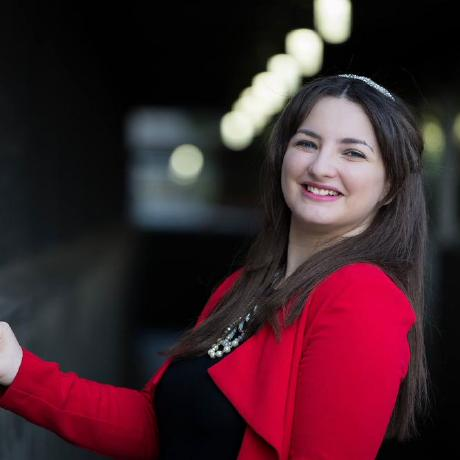

May E. ElSherif
CS Ph.D. Candidate, UC Santa Barbara
Previous Research Intern at the Berkman Klein Center, Harvard University


News and Travel
- Nov 2-4: Selected to attend CRA-W Early Career Mentoring Workshop at Phoenix, Arizona
- Sep 2018-June 2019: Excited to be a part of the NSF Early Research Scholars Program (ERSP) at UCSB. Will be part of a team advising 12 sophomores on how to conduct research in the areas of NLP, Architecture, and HCI.
- Sep 28: Willaim Wang presents our work on hate speech detection at the WeCNLP Summit hosted by Facebook
- June 25-28: Presenting "Hate Lingo: A Target-based Linguistic Analysis of Hate Speech in Social Media" at AAAI ICWSM'18, Stanford, CA
- June 25-28: Presenting "Peer to Peer Hate: Hate Speech Instigators and Their Targets" at AAAI ICWSM'18, Stanford, CA
- June 6-8: Invited to attend Information Disorder, New Media Ecosystems and Democracy: From Dysfunction to Resilience symposium, hosted by Harvard University
- June 4-Aug 10: Interning at the Berkman Klein Center for Internet and Society at Harvard University, Cambridge, MA
Mai ElSherief is a 5th year Ph.D. candidate at the Computer Science department at UC, Santa Barbara within the Mobility Management and Networking (MOMENT) Lab, advised by Elizabeth Belding and William Wang. Her research interests lie in the intersection of Social Computing, Natural Language Processing, and Online Social Networks, specifically causes of social good. Her Ph.D. thesis focuses on developing computational methods for improving the detection and characterization of online hate speech and communities of hate in addition to characterizing offline street harassment and online anti-gender-based violence social movements. She has been a summer research intern at the Berkman Klein Center for Internet and Society at Harvard University understanding anti-immigration sentiment and the discursive practices of online hate groups. She was awarded the 2017 Fiona and Michael Good Child Graduate mentoring award for her distinct research mentoring of undergraduate students.
Prior to entering the field of Social Computing, she earned her M.Sc. in the area of Wireless Communication and Information Technology from Nile University, Egypt. Funded by a Google Research Award, she devised novel Information-theoretic models for Opportunistic Mobile Social Networks. She is the recepient of both the IEEE best project for the Cairo University Student Branch (CUSB) and the Ideal student award for Cairo University in 2009.
Theses
| Year | Degree | Department | Title and Advisor | Context | Affiliation |
|---|---|---|---|---|---|
| Expected: 2019 | PhD | CS | Social Computing Techniques for Online Personal Safety Advised by Elizabeth Belding |
Analyzing online social movements related to gender-based violence and devising novel techniques for hate speech detection and characterization. [Youtube] |
UC Santa Barbara |
| 2013 | MSc | Wireless Communication and Information Technology | An Information Theoretic Model for Knowledge Sharing in Opportunistic Mobile Social Networks* Advised by Tamer ElBatt and Ahmed Zahran |
Designing novel temporal user similarity metrics and introducing an information theoretic model for knowledge sharing in opportunisitc social networks. *Funded by a Google Research Award |
Nile University |
Peer-reviewed Publications
Abbreviations
| AAAI, ACL, ACM & IEEE Conferences | |
| ICWSM | International AAAI Conference of Web and Social Media |
| EMNLP | Empirical Methods on Natural Language Processing |
| NAACL HLT | North American Chapter of the Association for Computational Linguistics: Human Language Technologies |
| CrowdSenSys | ACM Mobile Crowdsensing Systems And Applications |
| UrbanGIS | ACM Smart Cities and Urban Analytics |
| SocialCom | IEEE International Conference on Social Computing and Networking |
| Year | Venue | Title and Authors | Context | Affiliation |
|---|---|---|---|---|
| 2019 | In submission | To Hate or Not To Hate: Towards More Nuanced Hate Speech Detection Systems
by ElSherief, Qian, Yang Wang, and Belding |
UC Santa Barbara |
|
| 2019 | In submission | Hate Guerrilla: A First Look at the Discursive Practices of Online Hate Communities"
by ElSherief, Nguyen, Kulkarni, Yang Wang and Belding |
UC Santa Barbara |
|
| 2019 | In submission | On the Limits of Computing for Street Harassment Safety
by ElSherief, Vigil-Hayes, and Belding |
UC Santa Barbara |
|
| 2019 | In submission | Learning to Decipher Hate Symbols
by Qian, ElSherief, Belding, and Yang Wang |
UC Santa Barbara |
|
| 2018 | AAAI ICWSM | Hate Lingo: A Target-based Linguistic Analysis of Hate Speech in Social Media
by ElSherief, Kulkarni, Nguyen, Yang Wang, and Belding |
(16% acceptance rate) | UC Santa Barbara |
| 2018 | AAAI ICWSM | Peer to Peer Hate: Hate Speech Instigators and Their Targets
by ElSherief, Nilizadeh, Nguyen, Vigna, and Belding |
(16% acceptance rate) | UC Santa Barbara |
| 2018 | NAACL HLT | Leveraging Intra-User and Inter-User Representation Learning for Automated Hate Speech Detection
by Qian, ElSherief, Belding, Yang Wang |
(18% acceptance rate) | UC Santa Barbara |
| 2018 | EMNLP | Hierarchical CVAE for Fine-Grained Hate Speech Classification
by Qian, ElSherief, Belding, Yang Wang |
(25% acceptance rate) | UC Santa Barbara |
| 2017 | AAAI ICWSM | #NotOkay: Understanding Gender-based Violence in Social Media
by ElSherief, Belding, Nguyen |
(14% acceptance rate) | UC Santa Barbara |
| 2017 | ACM CrowdSenSys | Whom to Query? Spatially-Blind Participatory Crowdsensing under Budget Constraints
by ElSherief, Vigil-Hayes, Raghavendra, and Belding |
UC Santa Barbara |
|
| 2017 | ElSevier Pervasive and Mobile Computing 42 (2017) | A Novel Mathematical Framework for Similarity-based, Opportunistic Social Networks
by ElSherief, Alipour, Qathrady, ElBatt, Zahran, and Helmy |
[Journal Extended Version] | Nile University |
| 2015 | ACM UrbanGIS | The Urban Characteristics of Street Harassment: A First Look
by ElSherief and Belding |
UC Santa Barbara |
|
| 2015 | IEEE SocialCom | An Information-theoretic Model for Knowledge Sharing in Opportunistic Social Networks
by ElSherief, ElBatt, Zahran, and Helmy |
(25% acceptance rate) | Nile University |
2014 | IEEE Social and Community Intelligence (SCI) | The Quest for User Similarity in Mobile Societies
by ElSherief, ElBatt, Zahran, and Helmy |
(17% acceptance rate) | Nile University |
2013 | ACM MobiSys | O’BTW: An Opportunistic Similarity-based Mobile Recommendation System
by ElSherief, ElBatt, Zahran, and Helmy |
[Demo] | Nile University |